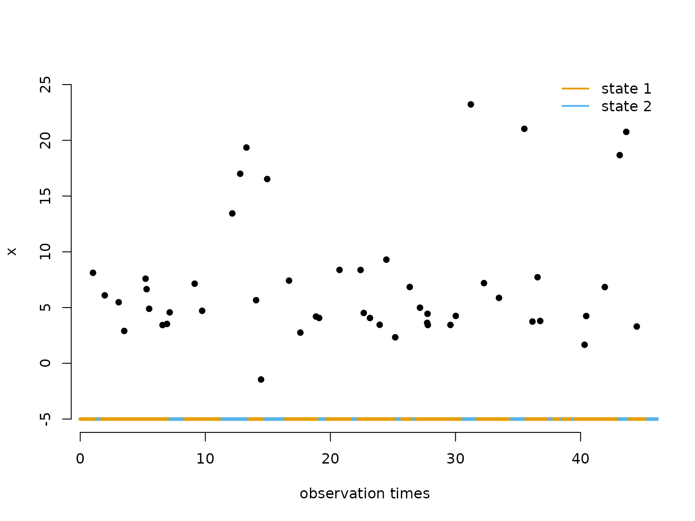
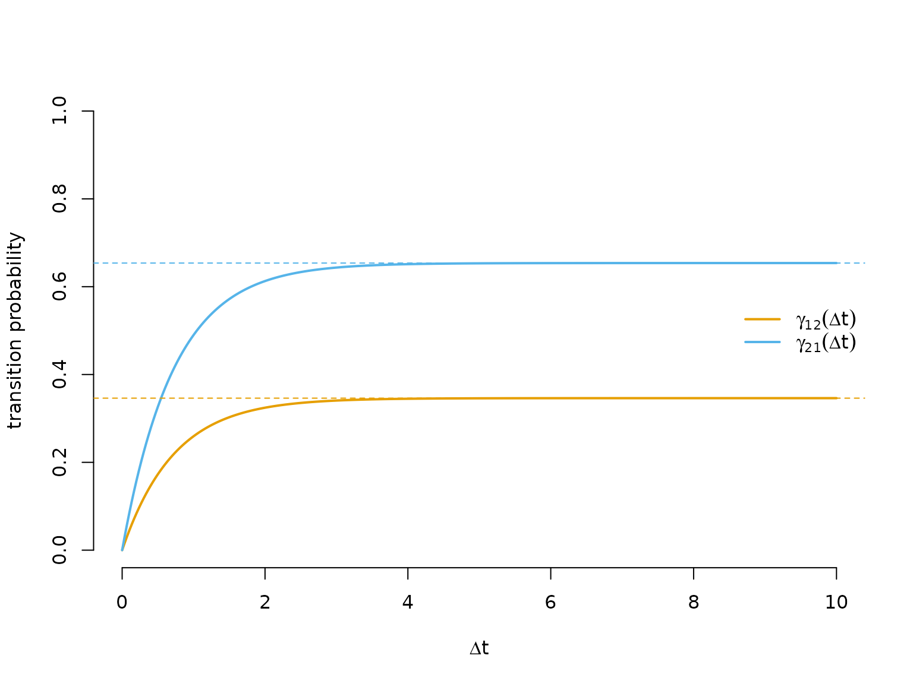
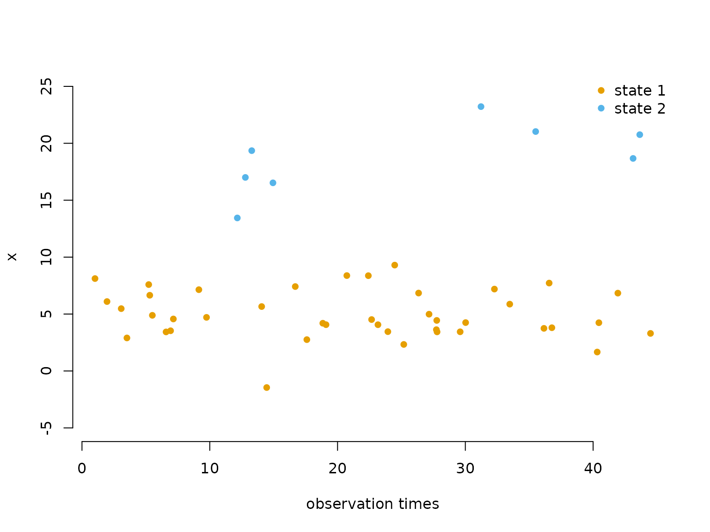
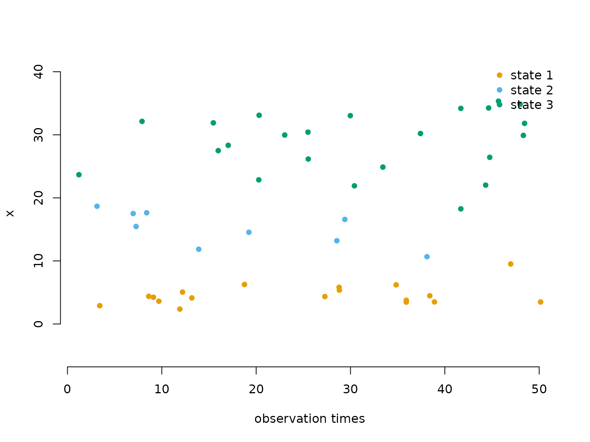

6 Continuous-time HMMs
Jan-Ole Fischer
Continuous_time_HMMs.RmdBefore diving into this vignette, we recommend reading the vignettes Introduction to LaMa and Automatic differentiation via RTMB.
In standard HMMs, observations are assumed to arrive at regular, equidistant time points, so that the transition probability matrix \Gamma can be given a consistent interpretation with respect to a fixed time unit (e.g. one hour or one day). In many real-world applications this assumption breaks down: animal telemetry fixes arrive at varying intervals, patient measurements are taken at unequal times, or data simply have gaps. Using a regular HMM in such cases leads to a misspecified transition structure, because the same \Gamma is applied regardless of whether the time gap is short or long.
The natural remedy is a continuous-time HMM, which replaces the discrete-time Markov chain with a continuous-time Markov chain (CTMC). The observation model and likelihood structure remain the same; only the state process changes. One important prerequisite is the snapshot property: the observed value at time t may only depend on the state at that instant, not on the history of the process or on how much time has elapsed since the previous observation. This is a reasonable assumption for many biological and physical processes. For more details see Glennie et al. (2023).
The generator matrix
A CTMC is fully characterised by its (infinitesimal) generator matrix Q = \begin{pmatrix} q_{11} & q_{12} & \cdots & q_{1N} \\ q_{21} & q_{22} & \cdots & q_{2N} \\ \vdots & \vdots & \ddots & \vdots \\ q_{N1} & q_{N2} & \cdots & q_{NN} \\ \end{pmatrix}, where q_{ij} \geq 0 for i \neq j and the diagonal satisfies q_{ii} = -\sum_{j \neq i} q_{ij}, so that every row sums to zero.
The off-diagonal entry q_{ij} is the instantaneous rate at which the process transitions from state i to state j. The diagonal entry -q_{ii} = \sum_{j \neq i} q_{ij} is the total leaving rate from state i, and the dwell time (time spent in state i before leaving) is exponentially distributed with mean 1/(-q_{ii}). Conditional on leaving state i, the probability of moving to state j \neq i is \omega_{ij} = \frac{q_{ij}}{-q_{ii}}. These two properties — the dwell time distribution and the conditional next-state probabilities — together fully describe the dynamics of the chain, and they are also how we simulate it in the examples below.
From the generator to transition probabilities
Given Q and a time interval of
length \Delta t, the transition
probability matrix is obtained via the matrix
exponential:
\Gamma(\Delta t) = \exp(Q \, \Delta t).
This follows from the Kolmogorov forward equations; see Dobrow (2016) for details. The key
practical point is that \Gamma(\Delta
t) automatically adapts to the length of the interval: short gaps
produce a matrix close to the identity (little chance of switching), and
long gaps produce a matrix close to the stationary distribution (the
process has had time to mix). LaMa computes this
efficiently for an entire vector of time differences using
tpm_ct().
Likelihood
The likelihood of a continuous-time HMM for observations x_{t_1}, \dots, x_{t_T} at irregular times
t_1 < \dots < t_T has
exactly the same structure as the regular HMM
likelihood:
L(\theta) = \delta^{(1)} \,\Gamma(\Delta t_1)\, P(x_{t_2})\,
\Gamma(\Delta t_2)\, P(x_{t_3}) \cdots \Gamma(\Delta t_{T-1})\,
P(x_{t_T})\, \mathbf{1}^\top,
where \Delta t_k = t_{k+1} -
t_k and each \Gamma(\Delta t_k) =
\exp(Q \,\Delta t_k) is specific to its interval. The initial
distribution \delta^{(1)} is typically
set to the stationary distribution of the CTMC, available via
stationary_ct(). Everything else — the allprobs matrix and
the forward algorithm via forward() — is identical to the
regular HMM case.
Example 1: two states
Simulating data
We start by setting parameters. The generator below specifies that from state 1 the leaving rate is 0.5 (mean dwell time 1/0.5 = 2 time units), and from state 2 the leaving rate is 1 (mean dwell time 1/1 = 1 time unit), so state 1 is the more persistent state.
# generator matrix Q
Q = matrix(c(-0.5, 0.5,
1.0, -1.0), nrow = 2, byrow = TRUE)
# state-dependent (normal) distribution parameters
mu = c(5, 20)
sigma = c(2, 5)We simulate the CTMC by drawing exponentially distributed dwell times, then switching state. Within each sojourn we generate observation times as a Poisson process with rate \lambda = 1 — this represents an irregular but otherwise uninformative observation mechanism that is not part of the model.
set.seed(123)
k = 200 # number of state switches to simulate
s = rep(NA, k) # latent state sequence
trans_times = rep(NA, k) # cumulative times at which state switches occur
# initialise: draw first state and its dwell time
s[1] = sample(1:2, 1)
dwell = rexp(1, -Q[s[1], s[1]]) # dwell time ~ Exp(-q_ii)
trans_times[1] = dwell
# Poisson arrivals during first sojourn [0, dwell], uniform within
new_obs = sort(runif(rpois(1, dwell), 0, dwell))
obs_times = new_obs
x = rnorm(length(new_obs), mu[s[1]], sigma[s[1]])
for(t in 2:k){
# for 2 states, the only possible next state is 3 - current
s[t] = 3 - s[t-1]
# dwell time in new state, and absolute transition time
dwell = rexp(1, -Q[s[t], s[t]])
trans_times[t] = trans_times[t-1] + dwell
# Poisson arrivals during sojourn [t_start, t_end], uniform within
t_start = trans_times[t-1]
t_end = trans_times[t]
new_obs = sort(runif(rpois(1, dwell), t_start, t_end))
obs_times = c(obs_times, new_obs)
x = c(x, rnorm(length(new_obs), mu[s[t]], sigma[s[t]]))
}The plot below shows the first 50 observations. The coloured bar at the bottom indicates the true (latent) state during each sojourn, illustrating the irregular observation times within each stay.
color = LaMaColors(2)
n = length(obs_times)
plot(obs_times[1:50], x[1:50], pch = 16, bty = "n",
xlab = "observation times", ylab = "x", ylim = c(-5, 25))
segments(x0 = c(0, trans_times[1:48]), x1 = trans_times[1:49],
y0 = rep(-5, 49), y1 = rep(-5, 49),
col = color[s[1:49]], lwd = 4)
legend("topright", lwd = 2, col = color,
legend = c("state 1", "state 2"), box.lwd = 0)
Writing the negative log-likelihood function
The likelihood function follows the same pattern as a regular
inhomogeneous HMM. The only addition is the generator() and
tpm_ct() calls: generator() maps the
unconstrained log_qs vector (one entry per off-diagonal
element of Q, on the log scale to
ensure positivity) to a valid generator matrix, and
tpm_ct() computes \exp(Q \,
\Delta t) for every observed time difference at once.
nll = function(par) {
getAll(par, dat)
mu = exp(log_mu); REPORT(mu)
sigma = exp(log_sigma); REPORT(sigma)
Q = generator(log_qs); REPORT(Q) # maps unconstrained params -> valid Q
Pi = stationary_ct(Q) # stationary distribution of the CTMC
Qube = tpm_ct(Q, timediff) # exp(Q * dt) for each time difference
allprobs = matrix(1, length(x), N)
ind = which(!is.na(x))
for(j in 1:N) allprobs[ind, j] = dnorm(x[ind], mu[j], sigma[j])
-forward(Pi, Qube, allprobs)
}Fitting the model
N = 2
timediff = diff(obs_times) # time differences between consecutive observations
par = list(
log_mu = log(c(5, 15)), # initial state-dependent means (log scale)
log_sigma = log(c(3, 5)), # initial state-dependent sds (log scale)
log_qs = log(c(1, 0.5)) # initial off-diagonal generator entries (log scale)
)
dat = list(
x = x,
timediff = timediff,
N = N
)
obj = MakeADFun(nll, par, silent = TRUE)
system.time(
opt <- nlminb(obj$par, obj$fn, obj$gr)
)
#> user system elapsed
#> 0.118 0.000 0.118
mod = report(obj)Results
mod$mu # true: 5, 20
#> [1] 5.064028 20.241337
mod$sigma # true: 2, 5
#> [1] 2.023335 4.809845
round(mod$Q, 3) # true: Q as defined above
#> S1 S2
#> S1 -0.479 0.479
#> S2 0.905 -0.905The estimated generator can be interpreted directly: the mean dwell time in each state is 1/(-\hat{q}_{ii}).
The transition probability curves \gamma_{ij}(\Delta t) show how quickly the process mixes as the lag grows. At \Delta t = 0 the matrix is the identity; as \Delta t \to \infty both off-diagonal entries converge to the stationary probability of the destination state (dashed lines), reflecting full mixing.
dt_seq = seq(0, 10, length.out = 300)
Qube_seq = tpm_ct(mod$Q, dt_seq)
Pi_ct = stationary_ct(mod$Q)
plot(dt_seq, Qube_seq[1, 2, ], type = "l", lwd = 2, col = color[1], bty = "n",
xlab = expression(Delta*t), ylab = "transition probability", ylim = c(0, 1))
lines(dt_seq, Qube_seq[2, 1, ], lwd = 2, col = color[2])
abline(h = Pi_ct[2], lty = 2, col = color[1]) # long-run limit of gamma_12
abline(h = Pi_ct[1], lty = 2, col = color[2]) # long-run limit of gamma_21
legend("right", lwd = 2, col = color, bty = "n",
legend = c(expression(gamma[12](Delta*t)), expression(gamma[21](Delta*t))))
We can also decode the most probable hidden state sequence using
viterbi(). Because forward() automatically
stores delta, Qube, and allprobs
in the model report, we can pass the report object directly.
states = viterbi(mod = mod)
plot(obs_times[1:50], x[1:50], pch = 16, bty = "n",
col = color[states[1:50]],
xlab = "observation times", ylab = "x", ylim = c(-5, 25))
legend("topright", pch = 16, col = color,
legend = paste("state", 1:N), box.lwd = 0)
Example 2: three states
Simulating data
# generator matrix Q
Q = matrix(c(-0.5, 0.2, 0.3,
1.0, -2.0, 1.0,
0.4, 0.6, -1.0), nrow = 3, byrow = TRUE)
# state-dependent (normal) distribution parameters
mu = c(5, 15, 30)
sigma = c(2, 3, 5)The three-state simulation differs from Example 1 in one key place: when the chain leaves a state, there are now multiple possible destination states, so we have to draw which state to go to. The probabilities are given by \omega_{ij} = q_{ij}/(-q_{ii}), i.e. the off-diagonal entries of the current row of Q normalised by the total leaving rate.
set.seed(123)
k = 200
s = rep(NA, k)
trans_times = rep(NA, k)
# initialise
s[1] = sample(1:3, 1)
dwell = rexp(1, -Q[s[1], s[1]])
trans_times[1] = dwell
new_obs = sort(runif(rpois(1, dwell), 0, dwell))
obs_times = new_obs
x = rnorm(length(new_obs), mu[s[1]], sigma[s[1]])
for(t in 2:k){
# conditional transition probabilities: omega_ij = q_ij / (-q_ii)
omega = Q[s[t-1], -s[t-1]] / -Q[s[t-1], s[t-1]]
s[t] = sample((1:3)[-s[t-1]], 1, prob = omega)
dwell = rexp(1, -Q[s[t], s[t]])
trans_times[t] = trans_times[t-1] + dwell
t_start = trans_times[t-1]
t_end = trans_times[t]
new_obs = sort(runif(rpois(1, dwell), t_start, t_end))
obs_times = c(obs_times, new_obs)
x = c(x, rnorm(length(new_obs), mu[s[t]], sigma[s[t]]))
}Fitting the model
The same nll function works for any number of states —
only par, dat and N need to
change. Note that a 3-state model has N(N-1) =
6 off-diagonal entries in Q.
N = 3
timediff = diff(obs_times)
par = list(
log_mu = log(c(5, 10, 25)), # initial state-dependent means
log_sigma = log(c(2, 2, 6)), # initial state-dependent sds
log_qs = rep(0, N*(N-1)) # initial off-diagonal generator entries (exp(0) = 1)
)
dat = list(
x = x,
timediff = timediff,
N = N
)
obj2 = MakeADFun(nll, par, silent = TRUE)
system.time(
opt2 <- nlminb(obj2$par, obj2$fn, obj2$gr)
)
#> user system elapsed
#> 0.252 0.000 0.253
mod2 = report(obj2)Results
mod2$mu # true: 5, 15, 30
#> [1] 4.895243 15.447412 29.104492
mod2$sigma # true: 2, 3, 5
#> [1] 1.797216 2.579715 5.058744
round(mod2$Q, 3) # true: Q as defined above
#> S1 S2 S3
#> S1 -0.888 0.565 0.323
#> S2 2.821 -3.469 0.648
#> S3 0.000 0.770 -0.770
round(1 / diag(-mod2$Q), 2) # estimated mean dwell times; true: 2, 0.5, 1
#> S1 S2 S3
#> 1.13 0.29 1.30
color3 = LaMaColors(3)
states2 = viterbi(mod = mod2)
plot(obs_times[1:50], x[1:50], pch = 16, bty = "n",
col = color3[states2[1:50]],
xlab = "observation times", ylab = "x", ylim = c(-5, 40))
legend("topright", pch = 16, col = color3,
legend = paste("state", 1:N), box.lwd = 0)
Continue reading with Markov-modulated Poisson processes.